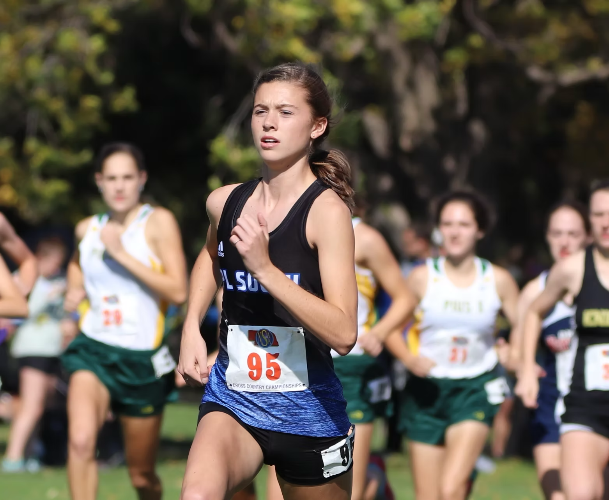
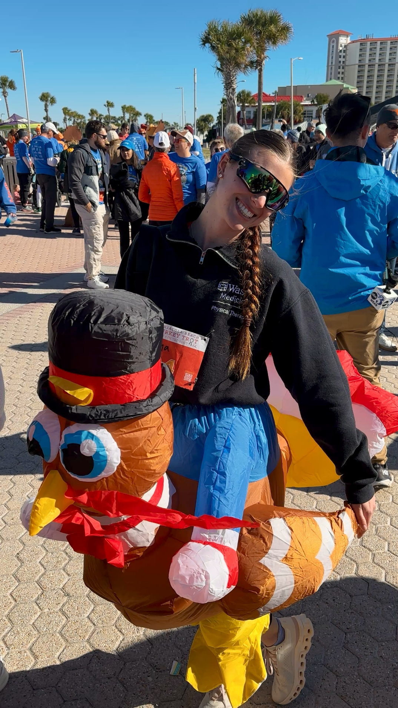
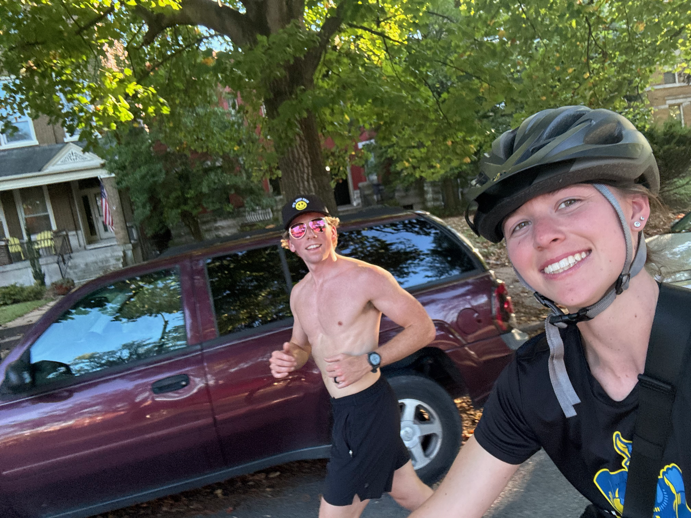
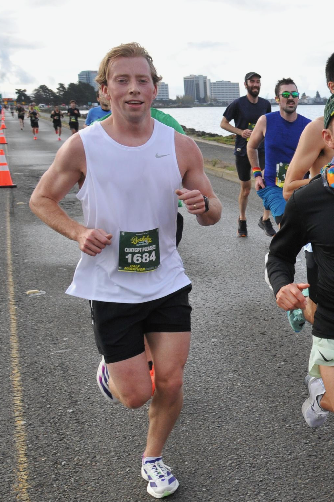

Tryna learn some speed...
The GOAT... my former D1 athlete wife/coach
Best coach ever and best company on long runs with a history of SPEED! Sometimes she's on two wheels, sometimes she rides Charles the turkey.




This one started it all... my first race, a course that runs past the lab and the crib. Hard to imagine a more personal place to pin on a bib.